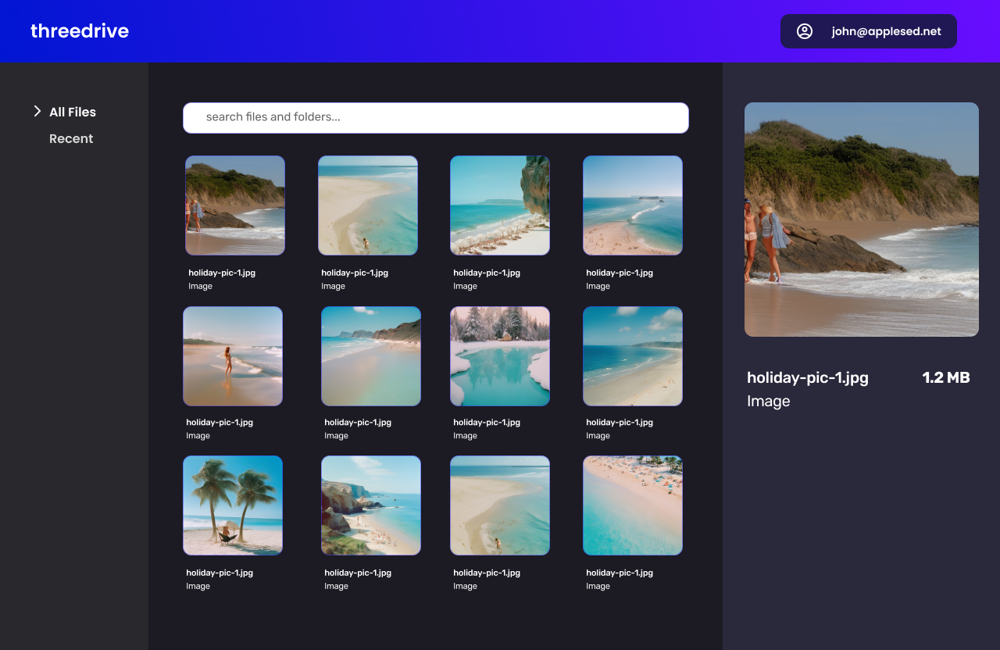

Threedrive
Front End / Design
Figma, Vue.js, Typescript
 Live app
Live app
This app was a personal project built on a small team to serve as a user
interface for amazon s3 storage.
The Process
Brainstorming ideas with a friend of mine, we realised that there was a
gap in the market when it came to modern s3 interfaces. With this in
mind, we began designing the layout and user flow. Once we had the
general idea of an MVP, we built out the application utilising Vue.js,
frequently referencing the design.